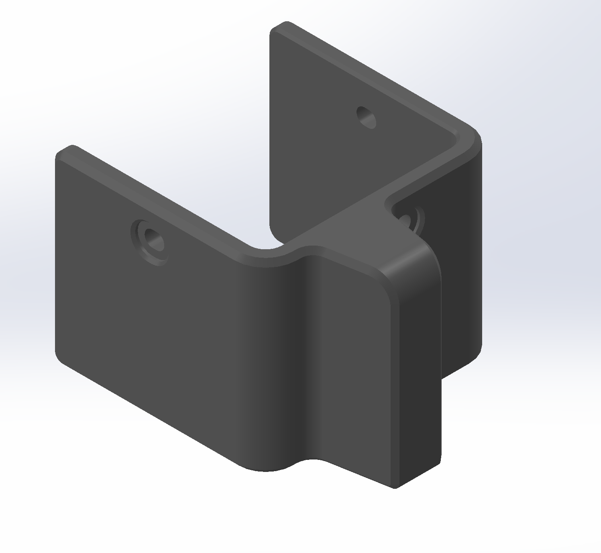

Commercial Product Improvement
1080 Motion Cable Guide
A production-ready 3D-printed component designed to prevent premature cable wear on a commercial motion-training system. The project involved identifying the root cause, designing a retrofit solution, validating the fit, and producing multiple units for deployment.

Project Overview
Solving a recurring hardware problem with a simple retrofit.
During technical inspection and repair work, I identified repeated cable damage near the upper pulley assembly. The cable was contacting an aluminum edge during operation, gradually wearing through the outer material.
The goal was to create a durable solution that could be installed using the existing hardware, preserve normal cable movement, and avoid permanent modifications to the original product.
01 / Problem
Repeated contact was causing premature cable wear.
The cable path placed the cable against a sharp aluminum edge near the upper assembly. Continued friction damaged the cable covering and increased the likelihood of future failure.
The issue required more than replacing the cable. A permanent solution needed to address the source of the damage.


02 / Design
Built around the existing product.
I measured the original assembly and designed a form-fitting component that uses the existing mounting points. Rounded geometry redirects the cable away from the damaging surface while preserving clearance around the pulley and cable path.
- Uses existing mounting locations
- Requires no permanent modification
- Maintains pulley and cable clearance
- Designed for repeatable manufacturing
03 / Prototyping
Rapid iteration through additive manufacturing.
The part was manufactured using a Bambu Lab 3D printer, allowing the physical geometry to be evaluated directly on the commercial system.
Prototyping made it possible to verify mounting alignment, cable clearance, and overall fit before producing additional units.


04 / Production
Prepared for repeatable deployment.
After validating the design, multiple parts were produced simultaneously to support installation across additional systems.
The batch layout increased manufacturing throughput while maintaining dimensional consistency between components.
- Multiple units produced per print cycle
- Mounting-hole consistency verified
- Installation hardware standardized
- Technical instructions prepared for deployment
05 / Results
A focused solution that addresses the root cause.
Redirects the cable away from the aluminum wear point.
Uses existing fasteners and requires no permanent changes.
Validated on commercial hardware and manufactured in batches.
Engineering Takeaways
Solving the problem required more than creating a CAD model.
This project reinforced the importance of identifying the underlying failure before developing a solution. The final part needed to fit the existing assembly, guide the cable without introducing additional friction, and be simple enough to manufacture and deploy repeatedly.
It strengthened my experience with rapid prototyping, mechanical fitment, design iteration, hardware validation, and creating practical improvements for commercial equipment.
Skills Demonstrated